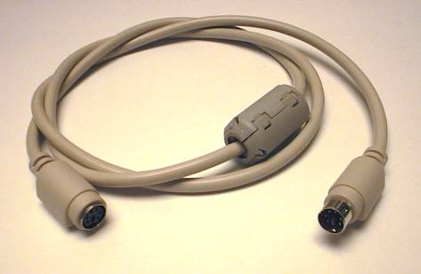
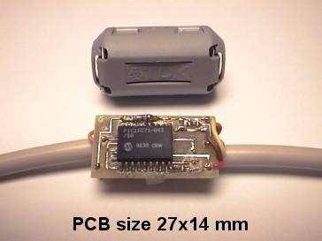

The KEYSPY is a hardware keyboard logger that can record keystrokes
from a PS/2 keyboard and send them back to the PC at any later
time. A great advantage of the KEYSPY compared with software
keyloggers: it also logs bios or boot loader passwords or
show that someone tried to access the computer with a live boot disc.
Depending on the EEPROM used the keyspy records up to 64K
characters.
Please consider: it max be illegal to observe people with this device without their knowledge!
The keyspy is connected between a PS/2 keyboard and the PC. The PCB is small enough to fit into a ferrite filter housing.
It may also be implemented directly into the keyboard.


On this page you will find anything you need to build your own
keyspy, but its meant for hobbyists who already have some
microcontroller experience. All information is free, the
source code is licensed under the GPL. The KEYSPY is not for sale!
A top and bottom view of the KEYSPY pcb. Thanks to www.matwei.de for the great work on Eagle3D!
{kind=link}
{kind=link}